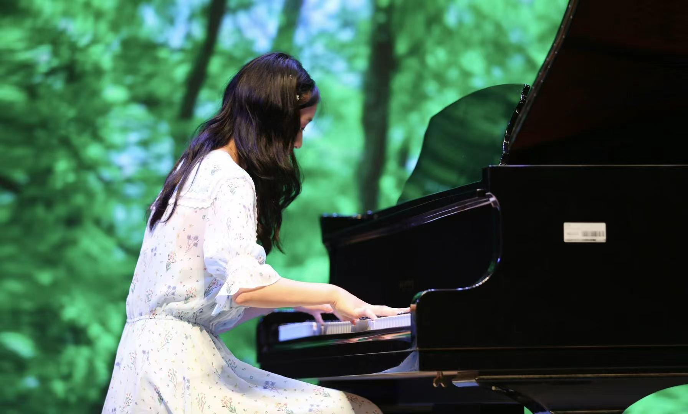

May 112025
SOLO RECITAL
One-Hour Solo Piano Recital
A full-length solo piano recital.
Music has been an important part of my academic journey.
Alongside my research in engineering and computer science, I have pursued classical piano through solo recitals, chamber collaborations, and university ensembles. Below are selected performances and recognition from my time at Washington University in St. Louis.

HONORS
Friends of Music Concerto & Aria Competition
Washington University in St. LouisON STAGE
A full-length solo piano recital.
Friends of Music Concerto & Aria Competition
Piano Division Recital
For viola and piano
For piano, two violins, and cello
MUSIC TOGETHER
Washington University in St. Louis
Washington University in St. Louis
BACK TO RESEARCH
Learn more about my work in stochastic control, optimization, and formal methods.